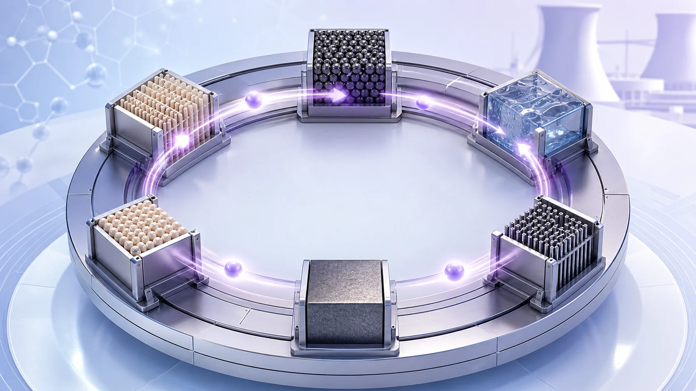
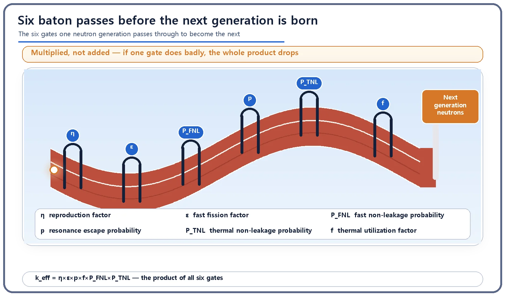
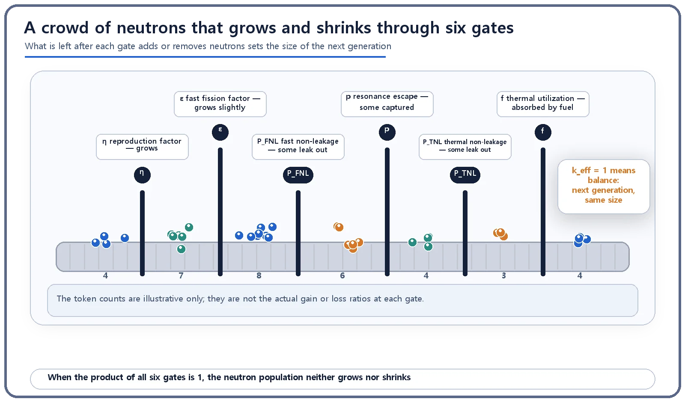

Neutron Physics & the Core · 085
Six Baton Passes to the Finish Line — The Big Picture of the Six-Factor Formula
Like a relay team that must get the baton through every leg, a neutron generation must pass six gates, and the product of those pass rates is k_eff.

The six-factor formula writes the multiplication factor as the product of six pass rates that one neutron generation runs through on the way to the next. Four of them give k∞ = η·ε·p·f; two non-leakage probabilities complete k_eff = k∞·P_FNL·P_TNL. Because the factors multiply, one weak gate drags the whole value down, and a product of exactly 1 means criticality. [1]
Six baton passes to the finish line
In a relay race, a fast anchor runner can't save the team alone. If any runner in the middle drops the baton or fumbles the handoff, the race is effectively over. To cross the finish line, every leg has to go through without a single slip.
The way one generation of neutrons in a reactor turns into the next is remarkably similar, except this relay has six legs. The combined rate at which neutrons make it through all six is described by the six-factor formula.
That k value was really six numbers multiplied together
Two numbers decide whether the neutron population in a reactor grows or shrinks: the value for a medium assumed to be infinitely large (k∞) and the value for a real core of finite size (k_eff). Usually we only talk about the result ("above 1 it grows, below 1 it shrinks"). Open the box and a k value turns out to be the product of the rates at which neutrons pass through six different gates.

The six legs the baton runs through
| Leg | Factor | What it measures |
|---|---|---|
| 1 | η, reproduction factor | Average number of new fast neutrons born per neutron absorbed in the fuel. The count grows here. |
| 2 | ε, fast fission factor | A little more growth from extra fissions while neutrons are still fast. |
| 3 | P_FNL, fast non-leakage probability | Fraction that stay in the core, rather than leaking out, while slowing down. |
| 4 | p, resonance escape probability | Fraction that slip past resonance-absorption "traps" while slowing down. |
| 5 | P_TNL, thermal non-leakage probability | Fraction of slowed (thermal) neutrons that don't leak out before being absorbed. |
| 6 | f, thermal utilization factor | Fraction absorbed in the fuel itself rather than elsewhere; the next fission starts here. |
A neutron that clears the sixth leg goes back to the first (η) and gives birth to the next generation, like a relay team completing a lap and lining up at the start again. η and ε are multipliers greater than 1; the other four are probabilities less than 1.

Multiplied, not added: that's the key
The six legs don't add together; they are all multiplied:
k∞ = η · ε · p · f
k_eff = η · ε · p · f · P_FNL · P_TNL = k∞ · P_FNL · P_TNL
k∞ multiplies only four legs (η, ε, p, f): it assumes an infinitely large medium with no route for neutrons to leak out, so the two leakage gates aren't needed. A real reactor has a finite size and some neutrons inevitably leak, so k_eff multiplies in the two non-leakage probabilities as well. [2]
Because it's a product, if just one gate performs badly (say, the core is so small that a non-leakage probability drops sharply), the whole value is dragged down no matter how good the other five are, just as one fallen runner sinks the relay team. Reactor designers therefore manage all six legs in balance rather than fixating on one.
"So are there six different kinds of neutrons?"
No. From start to finish it is the same crowd of neutrons; the six factors are pass rates attached to the six physical stages it goes through, in order, from one generation to the next, like one relay team passing the same baton. And k_eff is not a plant's efficiency or output: it is only the ratio by which the neutron population grows or shrinks per generation.
At the finish line: the balance of k_eff = 1
When the product of all six gates is exactly 1, the neutron count in one generation equals that in the next. That is the state of a reactor running steadily at constant power, called criticality. Above 1 the population grows; below 1 it shrinks.
Designers set the pass rate of each gate through fuel enrichment, the choice and arrangement of moderator and coolant, and the size and shape of the core. During operation, control rods and the concentration of boric acid dissolved in the cooling water finely adjust some of these gates to keep the product as close to 1 as possible.
The takeaways
k∞ = η·ε·p·f, and k_eff = k∞·P_FNL·P_TNL. The six gates are multiplied, not added, so one weak gate pulls the whole value down. When k_eff is exactly 1, successive generations have the same number of neutrons: the balanced, critical state.